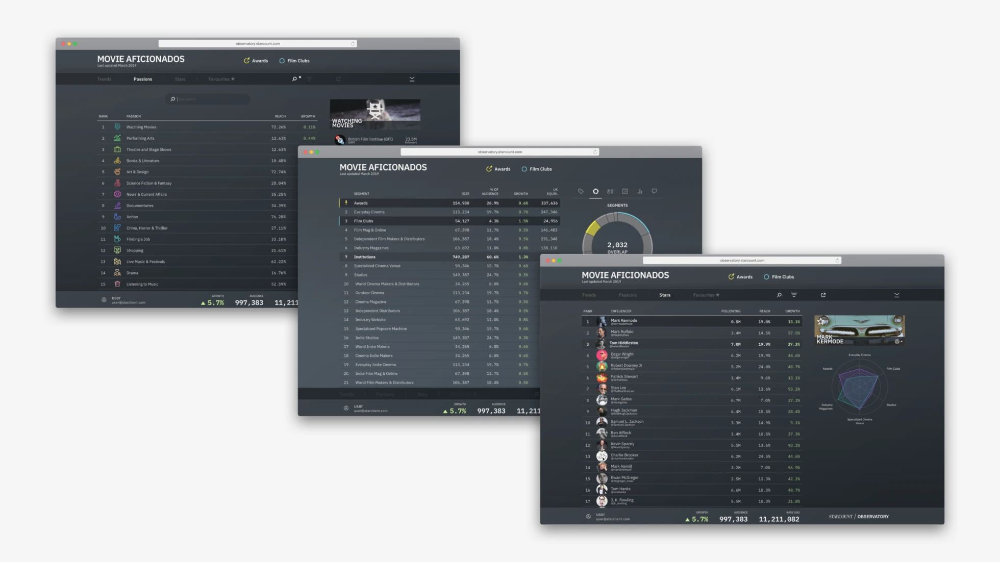
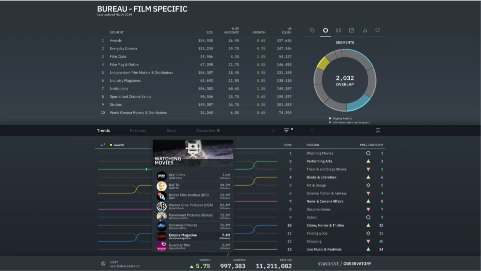
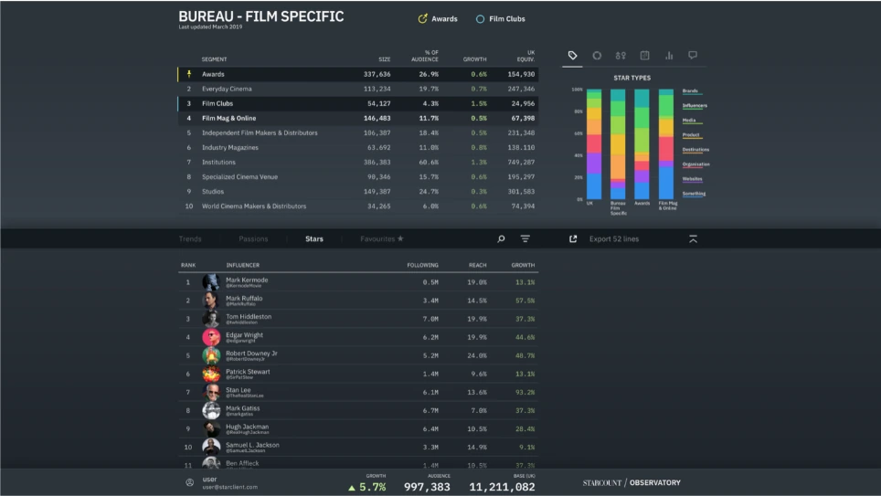
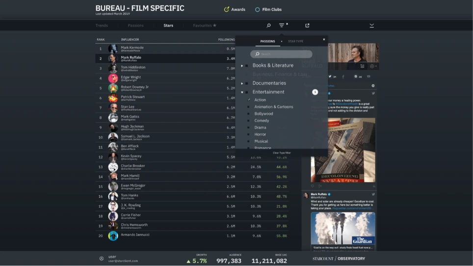
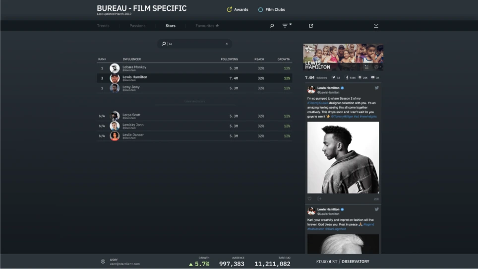

As a companion product to Audiences, it was very important to have a shared design language that made users of one platform feel at home on the other. With this (initial) goal in mind, we started by simply skinning the Observatory, with Audiences’ components and design system assets. This gave us a good idea of how much design work was ahead and quickly identified what areas would be good candidates to review first.

Usage analysis and feature editing
As the product was fairly old, with a small user base, it was a good bet to challenge all prior assumptions and look into what we should keep, cut, or improve upon. The initial review process was a quick and simple usage analysis and if that didn’t give us enough certainty we’d flag it to clarify with users before committing to any significant work. This gave us a good first draft of a roadmap to follow. After updating old assets to new ones, cutting down unnecessary features, we set to revamp key areas and identify any opportunities to develop new features (or reuse from Audiences). The whole project was ready for re-launch in record time, and was able to “ride” on Audiences’ success and sales effort.




“Lite” mobile app
After the initial success and adoption, there was a renewed interest in the product and scope for mobile development. As a product built for the big screen, there wasn't much that translated directly from the large landscape, to the small portrait. This made it very important to adequately plan, and set quick incremental steps and goals, in order to show stakeholders timely and visible progress. In the end, a full translation didn’t make much sense, so we developed a lite version that did not have full functionality or feature parity with the desktop counterpart, but was really good in “at a glance” scenarios where users might just want to check on a saved search, or do a quick bookmark to explore later on the bigger screen.